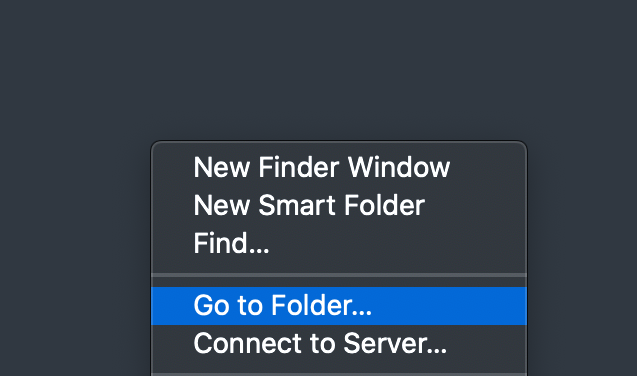
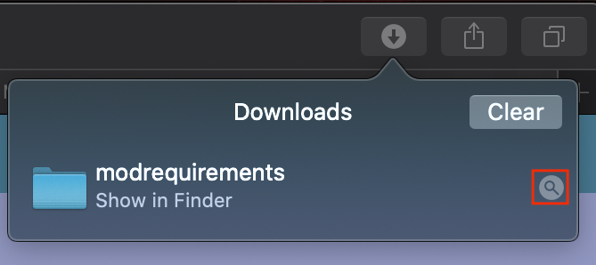

Installation
This will be a short tutorial on installing Minecraft mods for those of you who have never done this yourselves. The tutorial will assume you know about your computer's file systems. If you do, skip to the tutorial. If you somehow do not, here's a basic tutorial. The way your computer works is that there are tons of folders each controlling a diffrent part of your computer. There is one big folder and all the other folders are inside that one. The big main folder is called "C:" on Windows and on Mac there are 4: Users, Library, System, and Applications. In Windows, the way you tell your computer to open a specific folder is to go into file explorer by pressing  and E on your keyboard. At the top of the file explorer window, there is a long bar beside the search bar.
and E on your keyboard. At the top of the file explorer window, there is a long bar beside the search bar.
If you click on it you can enter a filepath, which will tell the computer to go to the folder you want. To separate folders you use a backslash, or \. So imagine we want to go to a folder rocks, which is inside of a folder called outdoors, which is in a folder called life. So you would go to the file explorer and in the top bar type "life\outdoors\rocks" because the folder rocks is after, or inside the folder called outdoors and outdoors is inside of the life folder.
Of course, as I explained earlier, in Windows the main folder is called "C:" not life.
For Mac, Its pretty simple. To get to a folder, right click on the finder icon at the bottom bar of your computer:
and select "Go to Folder...":

This will bring up a pop up window:
here, you can type the filepath. In Mac though, folders are separated by a forward slash instead of a backslash. Also, Mac filepaths start with a slash as well. So the life > outdoors > rocks filepath from before would be writtten like this: /life/outdoors/rocks.
Knowing Your Computer User Name
Another important thing to know: each computer has a unique user name. This is used in your file system so be sure to know it! If you do not know it, here's how you can find out: on Windows, press and R on your keyboard. This will open a small dialog, and type "cmd" in it:
That will open the Terminal, and there is your windows user name:
On Mac, go into finder:
At the top, press Go, then press Home:
Beside the house icon, it will show your Mac user name.
That's all you need to know about the file system! Good job, you get a prize here.
Installing the Mod
Windows
To install the mod in Windows you have to first download the mod in the homepage. After that, at the bottom, click "Show All".
This will take you to the downloads page. Here, find modrequirements.zip and click on "Show in folder".
Right click on the modrequirements.zip and select "Extract All". It will prompt you for a extract location but don't change anything, just click on extract.

Then copy the contents of the new modrequirements folder.
You will now have to go to the filepath C:\Users\(your computer user name)\Appdata\Roaming\.minecraft. Inside, look for a folder called mods. If there is no folder called mods, make one called exactly "mods". Inside there will probably be nothing, or maybe a mod's old version. Anyhow, you must delete the contents of the the mods folder and paste in the contents of the modrequirements folder.

Make sure the 2 .jar files are inside the mods folder and not the modrequirements folder. Also delete the modrequirements folder as it is not neccecary anymore. That's it!
Mac
In Mac, you also must first download the modrequirements.zip file. In Safari, click on the arrow at the right of the top bar. You will see a folder called modrequirements.
Click on the little magnifying glass. This will reveal the folder in your Finder.

Then, copy the contents of the modrequirements folder.
After that, head to the filepath /Users/(your computer user name)/Library/Application Support/minecraft.
Inside, you will have to find a folder called mods. If there is no folder called mods, make one called exactly "mods". Inside, delete all the contents and paste in the contents of the modrequirements folder.
That's it!